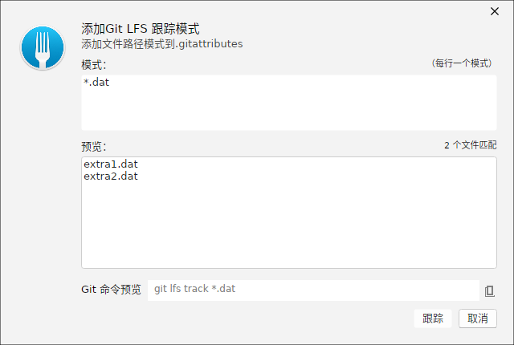
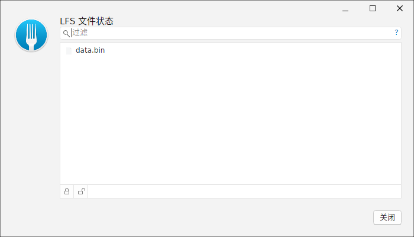
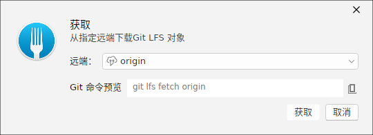
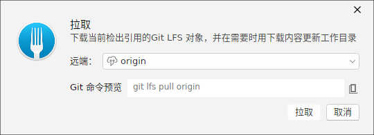

Git LFS（Large File Storage）用于管理二进制与大文件：仓库里只保存文件的轻量「指针」，真正的文件内容存放在独立的 LFS 存储中，从而让克隆与历史保持轻量。ForkPlus 提供 跟踪（Track）、文件状态、拉取/获取（Pull/Fetch） 与 锁定（Lock/Unlock） 图形界面。
跟踪大文件（Track）
打开「跟踪文件」窗口，输入文件名模式（如 *.dat）。ForkPlus 会：
- 实时预览将写入
.gitattributes的git lfs track <模式>命令。 - 扫描当前工作区，统计并列出匹配该模式的文件数（如
*.dat匹配 2 个文件）。
确认后，该模式即被登记为 LFS 跟踪，之后同类文件会以指针方式入库。

LFS 文件状态
打开「LFS 文件状态」窗口可查看仓库当前纳入 LFS 的文件列表：
- 过滤框：按文件名（或锁定所有者）实时筛选，快速定位目标。
- 文件列表：列出 LFS 文件，可选中后操作。
- 锁定 / 解锁：对选中的 LFS 文件执行
git lfs lock / unlock。锁定后显示所有者；对已被他人锁定的文件重复锁定会得到 409 冲突提示。

获取与拉取 LFS 对象
当仓库的 LFS 指针已就位但对象尚未下载时：
- Fetch（获取）：把 LFS 对象下载到本地对象库但不检出，工作区仍保留指针。
- Pull（拉取）：拉取并
smudge，把工作区的指针替换为真实文件内容，即可直接使用。
两个窗口都会给出对应的 git lfs 命令预览，确认后执行。


锁定协作
多人协同编辑同一份二进制/LFS 文件时，建议先锁定再编辑。被锁定的文件只有你本人能推送修改，避免改后才发现与他人冲突。完成后解锁释放。锁信息存放于 LFS 锁定 API，ForkPlus 会在状态窗口的「所有者」列中展示当前锁归属。
小贴士：提交 LFS 文件前，可在提交视图中通过「是否 LFS」识别。被跟踪的二进制内容会以指针文件进入提交，而真实对象在
push 时一并上传到 LFS 存储。注意：锁定功能需要配置 LFS 锁定服务的访问地址（
lfs.url 或远端默认地址）并允许 Git LFS 3.x；本地 file:// 远端通常无法提供锁定 API。